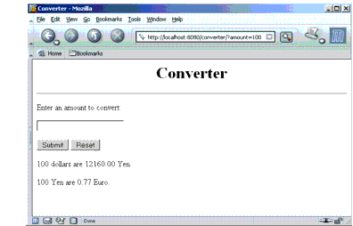

www.netbeans.org
Feedback
java.sun.com
|
Download
www.netbeans.org |
|
API
Feedback java.sun.com |
Running the Web Client
As stated above, the IDE automatically runs the web client every time you run the ConverterApp project. Once the enterprise application is deployed to a running application server, you can access the application client at any time by pointing your browser at the following URL. Replace
<host>with the name of the host running the Application Server. If your browser is running on the same host as the Application Server, you can replace<host>withlocalhost.After entering
100in the input field and clicking Submit, you should see the screen shown in Figure 5-1.

|
Download
www.netbeans.org |
|
API
Feedback java.sun.com |
All of the material in The J2EE(TM) 1.4 Tutorial is copyright-protected and may not be published in other works without express written permission from Sun Microsystems.